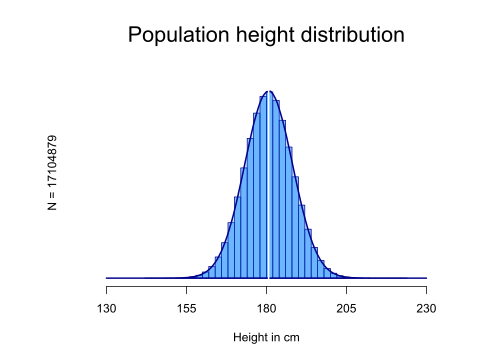

Bootstrap
Erik-Jan van Kesteren
Introduction
The word “bootstrap” comes from an old story about a hero - Baron Munchausen - who is riding around on his horse in a forest and suddenly gets stuck in a swamp. He screams for help but there is no one around who hears his voice! Luckily our hero does not give up and gets a great idea: “what if I just pull myself out of this swamp?”. He grabs the straps of his boots and pulls himself loose. Fantastic - he just invented bootstrapping.

Physics-defying stories aside, bootstrapping has become a common term for something seemingly impossible or counterintuitive. In this blogpost I will try to generate an intuition for the properties of statistical bootstrapping - resampling from your data to approximate resampling from a population.
The population
In order to explain bootstrapping, we need to generate an example. Let’s assume we want to know the average height of all the people in the Netherlands. With the power of R we can easily generate a population of 17104879 people (according to CBS, the amount of registered inhabitants of the Netherlands as per the creation of this post2). The Dutch are just about the tallest people on the planet, where the men are 180,7 centimeters tall, on average3.
Here is some more information about my population. For the sake of simplicity let’s assume that all inhabitants are actually men (which would be a disaster). The tallest Dutch man is 223 centimeters4 (which is very tall) and the shortest Dutch man is ridiculously hard to find on the internet. I have an intuition that it is further away from the mean of 180.7, which implies some negative skewness, but that’s not what this post is about so let’s also assume we have a non-skewed normal distribution.
After some fiddling with the standard deviation variable, I simulated the following population:
# generate population data
set.seed(3665364)
pop <- rnorm(17104879, mean = 180.7, sd = 7.5)
# plot the distribution
hist(pop, freq = FALSE, ylim = c(0, 0.06), xlim = c(120, 240), axes = FALSE,
breaks = 30, xlab = "", ylab = "", main = "", col = "#1E90FF88", border = "#00008B")
polygon(density(pop, from = 130, to = 230), cex = 2, col = "#1E90FF44", border = "#00008B",
lwd = 2)
abline(v = 180.7, col = "white", lwd = 2)
axis(1, at = c(130, 155, 180, 205, 230))
mtext("Population height distribution", side = 3, line = 1, cex = 1.8)
mtext("N = 17104879", side = 2, line = 0)
mtext("Height in cm", side = 1, line = 3)
Let’s look how tall the tallest man from the hypothetical all-men Netherlands is, along with some other statistics!
cat(" Statistics about the population:\n", "--------------------------------\n",
"The shortest person is ", min(pop), " cm tall.\n", "Mean height is ", mean(pop),
" cm.\n", "Median height is ", median(pop), " cm.\n", "The 5th and 95th percentiles are ",
quantile(pop, probs = c(0.05, 0.95)), "cm.\n", "The tallest person is ",
max(pop), " cm tall.")## Statistics about the population:
## --------------------------------
## The shortest person is 142.0121 cm tall.
## Mean height is 180.6979 cm.
## Median height is 180.698 cm.
## The 5th and 95th percentiles are 168.3612 193.0287 cm.
## The tallest person is 222.2139 cm tall.Source: http://en.citizendium.org/wiki/Image:Dore-Munchausen-pull.jpg↩
Source: https://www.cbs.nl/nl-nl/visualisaties/bevolkingsteller as per the writing of this post.↩
Source: https://is.gd/cbsdata↩
Quick google searchy source: https://www.langzijn.nl/tag/langste-man-nederland↩
{kind=link}